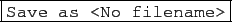
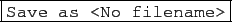

suivant: Description du tableur
monter: Le tableur
précédent: Généralités
Table des matières
Index
Pour créer un tableur,
il faut utiliser le menu Tableur,
puis Nouveau tableur ou le raccourci Alt+t.
Remarque
À l'ouverture du tableur, la fenêtre de configuration du tableur s'ouvre
et vous pouvez donner ou ne pas donner un nom au tableur dans la case
Variable :
- vous avez mis un nom dans la case Variable (par exemple M),
Alors cette variable contiendra la matrice définie par le tableur. De
plus, cette variable évolue avec le tableur automatiquement.
Lors de la sauvegarde du tableur, c'est ce nom avec le suffixe
.tab qui servira de nom de fichier (par exemple M.tab) et ce
fichier contiendra le tableur avec ses formules.
- vous n'avez pas mis de nom dans la case Variable,
Lors de la sauvegarde du tableur, on vous demande un nom de fichier (par
exemple MM.tab) (.tab sera rajouté automatiquement si vous
l'avez omis) et c'est ce nom sans son extension (par exemple MM) qui
servira de nom de variable : le nom dans la case Variable devient
MM automatiquement.
- vous avez mis un nom dans la case Variable (par exemple M) et
vous voulez sauver le tableur et ses formules sous un autre nom par exemple
A.tab. Vous faites cela avec Table
 Sauver comme
Dans ce cas le nom dans la case Variable change automatiquement et
devientA.
Sauver comme
Dans ce cas le nom dans la case Variable change automatiquement et
devientA.
On obtient un niveau contenant :
- en haut la barre de menu de ce niveau :
 et
et
à coté de cette barre de menus les boutons :


 

- en dessous, le tableur avec une case sélection, une ligne de commandes,
une ligne d'état et les cellules,
- en dessous du tableur, l'écran de représentation graphique du tableur.
Remarque
On peut choisir de :
- ne pas avoir d'écran graphique, il faut alors choisir
Cacher graphe dans Edit
Configuration du
tableur, ou encore ne pas cocher Graphe dans
l'écran de configuration du
tableur (que l'on obtient en cliquant sur la ligne d'état du tableur),
- d'avoir l'écran de représentation graphique du tableur à droite du
tableur il faut alors choisir Graphe portrait dans
Edit
Configuration du tableur, ou encore ne pas
cocher Graphe paysage dans l'écran de configuration du tableur (que
l'on obtient en cliquant sur la ligne d'état du tableur),
- d'avoir l'écran de représentation graphique du tableur en dessous du
tableur il faut alors choisir Graphe paysage dans
Edit
Configuration du tableur ou encore cocher
Graphe paysage dans l'écran de configuration du tableur
(cet écran de configuration du tableur s'obtient en cliquant sur la ligne
d'état du tableur ou avec
Edit
Configuration
Fenetre cfg).
- On peut enfin faire apparaitre le graphe 2-d ou 3-d associé
à l'ensemble des commandes du tableur ayant une sortie graphique
en cliquant sur le bouton 2d ou 3d.
suivant: Description du tableur
monter: Le tableur
précédent: Généralités
Table des matières
Index
Documentation de giac écrite par Renée De Graeve